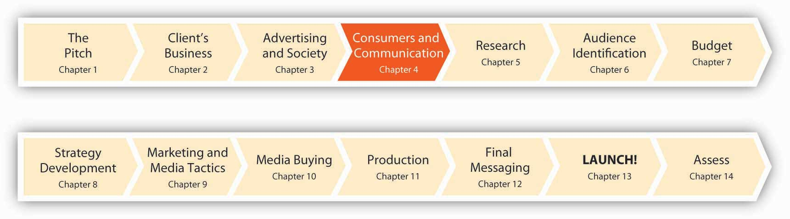
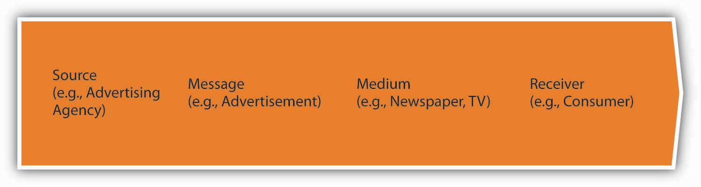
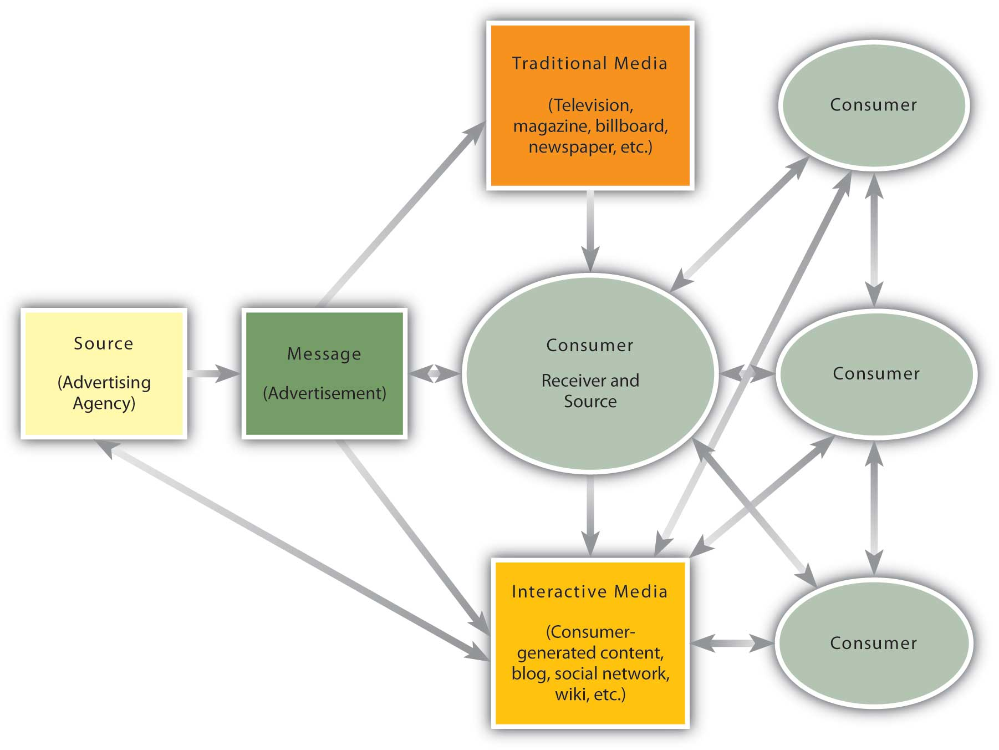
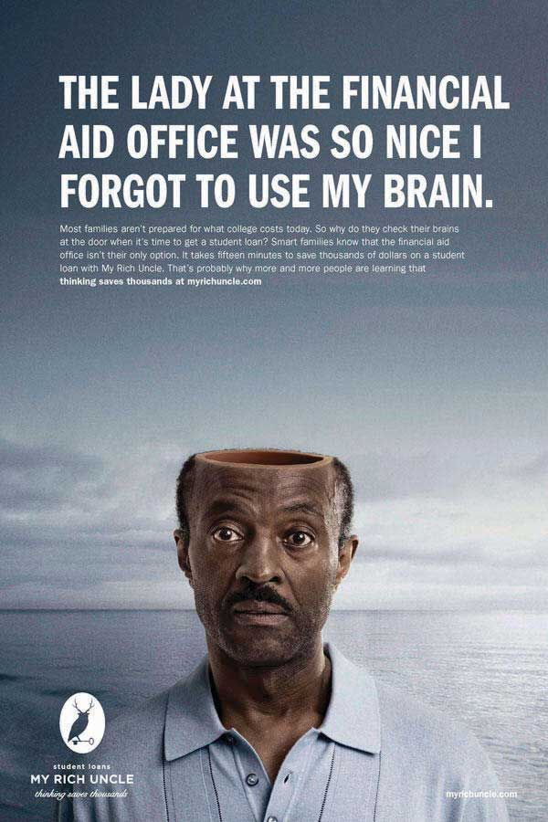
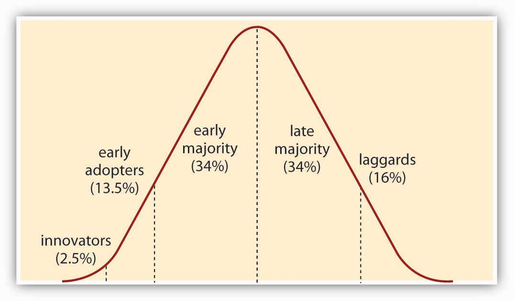

Figure 4.1 Twelve Months to Launch!
We are now twelve months from the launch of the msnbc.com campaign. The SS+K team needs to start thinking seriously about how it’s going to make consumers crave the msnbc.com brand of news. Before they can do that, however, they need to take a step back to understand how advertisers “talk” to customers—what works and what doesn’t, and what determines what works. This means we need to take a look at communications and break down a complicated process into simpler elements. Does it matter exactly what we say? Who says it? Where people get the message? How about others’ opinions—to what extent are our own preferences shaped (consciously or not) by what we believe others like or dislike? And, with the magical world of technology, how might the advertiser/consumer relationship evolve?
After studying this section, students should be able to do the following:
Figure 4.2 The Traditional Communications Model
For most of history, advertisers talked to consumers—the traditional communications modelA one-way communication system in which the source created a message and selected the medium that carried the message to the receiver. was a one-way street. It was pretty simple, really: The source (such as an advertising agency) created a message (the advertisement) and selected the medium (newspaper, TV, outdoor, etc.) that carried it to the receiver (the consumer). The consumer may have given feedback to the source about the message (typically only indirectly, namely by buying the advertised product or service or not)—and of course she may have ignored it, just as people often do today—but the line of communication was clearly drawn. The producer called the shots and the message was univocal (one voice).
Flash forward to a more dynamic—and chaotic—picture. Today, advertising messages come from many sources simultaneously through different media that target different receivers (consumers, business partners, stockholders, even government officials). At the same time, receivers talk with one another and they may initiate their own communication with the sender, whether that organization wants to hear it or not.
The updated communications modelThe interactive, nonlinear, and multivocal communication process prevalent in twenty-first-century advertising. is interactive, nonlinear, and multivocal (many voices). In addition, consumers now may choose to opt out of listening to a particular message—they often get to decide which messages they see or hear, and when. In the old days, opting out meant getting up to make a sandwich when a TV commercial came on, but today many of us have a lot more control to determine what messages will appear for us to consider in the first place. For marketers, this permission marketingA strategy in which consumers (receivers) indicate (for example, by searching for a certain topic on the Internet) that they are interested in receiving a communication before the sender transmits the message. strategy makes sense (even though some may be indignant that they’re losing control over the situation). The rationale is very simple: A message is more likely to persuade consumers who have agreed to listen to it in the first place.
Figure 4.3 A New Interactive, Nonlinear, Multivocal Communications Model
Seth Godin, founder of direct interactive marketing agency Yoyodyne (which Yahoo! later acquired) explains the importance of permission marketing: “We’re getting good at avoiding spam: e-mail spam, newspaper spam, TV spam, calling-me-at-home-over-dinner spam. The point of advertising shouldn’t be to interrupt more people who don’t want to talk to us.” To be heard above the noise, advertisers should seek permission from people to tell their story and begin a private, personal conversation that revolves around mutual interest and respect.Quoted in “Expert Tells Marketers: To Be Memorable, Get Permission” InformationWeek, May 18, 2007, http://www.informationweek.com/news/internet/showArticle.jhtml?articleID=199602077 (accessed May 18, 2007).
If we understand the communications model, we appreciate how messages affect people, how people make purchase decisions, and what influences these choices. These issues can help advertisers understand why people accept some messages while they ignore others. After all, it’s frustrating to be ignored—but in the world of advertising it’s also expensive.
We are used to thinking about communication as a one-way process that moves from a source who chooses what to say, how to say it, and where to say it to a receiver who either absorbs the message or not. That basic assumption is no longer valid in many cases, as consumers today become more proactive in the communications process. This creates many more interesting advertising possibilities, but it’s also harder to control the process once the inmates run the asylum.
After studying this section, students should be able to do the following:
Elements of who, how, and where an advertiser sends a message significantly affect how—or if—the audience receives it.
Who communicates the message (the source) has a big impact on whether a receiver will accept the message. You’re a lot more likely to download the latest Rihanna cut if your buddy recommends it than if you get the same advice from your kindly old uncle (unless he happens to be Jay-Z). The power of source effectsThe interpretation and impact of a message often is influenced by who delivers it., in fact, underlies the millions that celebrities make when they agree to endorse products. Obviously, advertisers feel it’s worth the substantial expense to pay a movie star or athlete to associate themselves with a certain brand’s message. Indeed, the pairing of a well-known person with a product is hardly new: Mark Twain’s image appeared on packages of flour and cigars in the late 1800s, while Buffalo Bill Cody hawked Kickapoo Indian Oil and Elvis was the face of Southern Maid Doughnuts. What makes an effective source? The important characteristics are credibility and attractiveness.
Source credibilityThe extent to which consumers perceive the source of a message as an expert who is objective and trustworthy. means that consumers perceive the source (the spokesperson) as an expert who is objective and trustworthy (“I’m not a doctor, but I play one on TV”). A credible source will provide information on competing products, not just one product, to help the consumer make a more informed choice. We also see the impact of credibility in Web sites like eBay or Wikipedia and numerous blogs, where readers rate the quality of others’ submissions to enable the entire audience to judge whose posts are worth reading.
Source attractivenessThe perceived social value of the source of a message—not just his or her physical appearance, but also personality, social status, or similarity to the receiver. refers to the source’s perceived social value, not just his or her physical appearance. High social value comes partly from physical attractiveness but also from personality, social status, or similarity to the receiver. We like to listen to people who are like us, which is why “typical” consumers are effective when they endorse everyday products.
So, when we think about source attractiveness, it’s important to keep in mind that “attractiveness” is not just physical beauty. The advertising that is most effective isn’t necessarily the one that pairs a Hollywood hottie with a product. Indeed, one study found that many students were more convinced by an endorsement from a fictional fellow student than from a celebrity. As a researcher explained, “They [students] like to make sure their product is fashionable and trendy among people who resemble them, rather than approved by celebrities like David Beckham, Brad Pitt or Scarlett Johansson. So they are more influenced by an endorsement from an ordinary person like them.”Quoted in “Celebrity Ads’ Impact Questioned,” BBC News, 27 February 2007, http://news.bbc.co.uk/1/hi/england/somerset/6400419.stm (accessed October 31, 2007).
Still, all things equal, there’s a lot of evidence that physically attractive people are more persuasive. Our culture (like many others) has a bias toward good-looking people that teaches they are more likely to possess other desirable traits as well. Researchers call this the “what is beautiful is good” hypothesis.Karen Dion, Ellen Berscheid, and Elaine Walster, “What Is Beautiful Is Good,” Journal of Personality and Social Psychology 24 (1972): 285–90. Unfortunately, in many cases, while beauty is only skin deep, “ugly is to da bone.”Some of the material in this chapter was adapted from Michael R. Solomon, Consumer Behavior: Buying, Having and Being, 8th ed. (Upper Saddle River, NJ: Prentice Hall, 2008).
Is source attractiveness more important than source credibility? The answer depends on the product or service you sell.
When to use credibility. If the product is utilitarian and complex (that is, consumers may not know much about how to use it), then a credible expert will be the most effective at persuading people to buy the product or service.
When to use attractiveness. If, on the other hand, the item is simple to understand (like clothing) but has a high social risk (that is, we’re concerned about the impression we’ll make on others if we’re seen with this item) then an attractive source will be more persuasive.
Sometimes you’re lucky enough to have a spokesperson who is both credible and attractive. This was the case for SS+K’s pro bono campaign for the United Nations peacekeepers when ads featured hunky UN messenger for peace George Clooney.
Figure 4.4
SS+K used actor George Clooney in its work for the United Nations peacekeepers.
How the message is said or presented is just as important as who communicates the message. Emotional messagesCommunication that appeals to, resonates with, or attempts to create an emotional response in the receiver. appeal to, resonate with, or attempt to create an emotional response in the receiver. One common emotional message style is the fear appealA psychological basis that motivates the viewer toward the advertiser’s goals by emphasizing negative consequences that can result unless a consumer takes the recommended action., which depicts the consequences of not using the product (e.g., social ostracism due to body odor). Another advertising strategy is to use humor. A study by Mediamark Research Inc. found that humor is the element in advertising that most appeals to kids.Mark Dolliver, “Critical Beer Drinkers, Confident Eaters, Etc.” Adweek, January 8, 2007, 24.
Rhetorical questionsA question asked in order to produce an effect or to make a statement rather than to elicit information. engage the receiver, don’t they? The question makes the receiver an active participant even if the medium of the message is passive or one-directional.
Examples versus statistics. Although examples and statistics can convey the same information, they do so in very different ways. Examples help put a human face on the product or its use, which creates an emotional connection and helps the receiver see how the product might influence his or her life. Statistics provide cold, hard numbers that may provide a rationale for purchase but not an emotional bond with the brand or product.
Interestingly, even among products whose purchase you might expect to be more rationally driven, such as pharmaceuticals, consumers are persuaded more by words and pictures from people who have had good results using the drug. Having Mrs. Jones’s picture with the words “Acme Sleep gave me my first restful night in fifteen years!” turns out to be more persuasive. Indeed, a study that included television ads for seven of the top ten best-selling prescription drugs for 2004 found that 95 percent of them used a positive emotional appeal (such as a character who’s happy after taking the product).Alicia Ault, “Drug Ads Play on Emotions,” Family Practice News, February 15, 2007, 45; Steve Smith, “Mastering the Direct Appeal,” Sleep Review 8, no. 4 (2007): 54.
One-sided messagesAdvertising that mentions only the positive attributes of the product. present only the positive attributes of the product—they provide one or more objective reasons to buy the product. These often include objective variablesReasons to buy a product, such as price, performance, size, and power. such as price, performance, size, and power.
Two-sided messagesAdvertising that presents both positive and negative information about the product. present both positive and negative information about the product. Although most advertising messages are one-sided, research indicates that a two-sided message is very effective. Although it seems counterintuitive that an advertiser would want to publicize negative attributes of a product, doing so actually builds credibility by making the message more balanced. People who hear only one-sided arguments may be more skeptical of the message, wondering what hasn’t been said. Refutational argumentsAdvertising that raises a negative issue and then refutes it., therefore, which raise a negative issue and then refute it can be quite effective if the audience is well educated and if the receivers are not already loyal to the product. (If they are already loyal to the product, then discussing possible drawbacks has little merit and may actually raise doubts.)
Comparative messagesAdvertising that explicitly trumpets a brand’s virtues vis-à-vis one or more named competitors. explicitly trumpet a brand’s virtues vis-à-vis one or more named competitors. To promote its latest line of chicken sandwiches, the Arby’s fast-food chain aired TV commercials that took direct aim at rivals McDonald’s and Wendy’s. In one spot, a young man stands in a (fictitious) McDonald’s boardroom as he tries to convince McDonald’s executives to serve a healthier type of chicken. Framed against a familiar golden arches logo, he proclaims, “I propose that McDonald’s stops putting phosphates, salt and water into its chicken. Consider replacing your chicken, that is only about 70 percent chicken, with 100 percent all-natural chicken.” Board members break out in laughter. At the end of the spot, a voice-over chimes in: “Unlike McDonald’s, all of Arby’s chicken sandwiches are made with 100 percent all-natural chicken.”Suzanne Vranica, “Arby’s TV Spots Play Game of Fast-Food Chicken,” Wall Street Journal, July 5, 2006, A16. This messaging strategy is more common in the United States than in other cultures like Japan, where it is extremely rare because some people consider it a rather abrupt and even rude way to communicate.
SS+K developed a comparative message in recent work for its client My Rich Uncle to draw attention to the different options that parents and students have to pay for college. See the ad below and listen to the radio spot, titled “Ahem.” At the beginning of the spot you’ll hear a man’s voice stating an ISCI code, agency, and title of spot. This is called a slate, and it is used by radio stations to ensure they are playing the correct spot.
Figure 4.5 One of the Print Ads SS+K Created for Its Client My Rich Uncle
“Ahem”
http://app.wistia.com/embed/medias/0dd16a8843The radio spot “Ahem” features a humorous voice of a brain to continue the comparative approach of the campaign.
Where a message is said—that is, our physical and social environmentThe surroundings where a message is delivered, including surroundings and decor, and whether or not others are present.—affects how receptive we are to the advertising message. What’s part of the physical environment? Surroundings and decor, for example. Our arousal levels rise when we’re in the presence of others. This arousal can be positive or negative. Watching a funny movie is often more enjoyable in a full movie theater where everyone else is laughing, too. But if we feel uncomfortably crowded, we may put up our guard.
Intangibles like odors and even temperature affect our ability and desire to listen to messages. Indeed, a growing number of marketers are counting on scents to turn into dollars as they invest in costly new technologies to create scented ads (a magazine ad with a scent strip costs four to eight times as much as an odorless version). Sure, we’re used to a bombardment of perfume smells when we open a fashion magazine, but today the boundaries have widened considerably. Kraft Foods promoted its new DiGiorno Garlic Bread Pizza with a scratch-and-sniff card (good to carry with you if you plan to encounter vampires). On behalf of its client the pay-cable Showtime network, TV Show Initiative (a unit of Interpublic Group) promoted the popular show “Weeds” by adding the scent of marijuana to strips in magazine ads. (So far, no reports of anyone trying to roll up the page and smoke it.)Stephanie Kang and Ellen Byron, “Scent Noses Its Way into More Ad Efforts,” Wall Street Journal, October 8, 2007, B7.
Finally, the message has to stand out from the clutterCompeting messages and multiple stimuli vying for receivers’ attention. of competing messages and stimuli, which can be a challenge given the multiple stimuli vying for our attention at any one time. Consumers often are in a state of sensory overloadThe condition of being exposed to far more information than one can process., where they are exposed to far more information than they can process. The average adult is exposed to about 3,500 pieces of advertising information every single day—up from about 560 per day thirty years ago.
Getting the attention of younger people in particular is a challenge—as your professor probably knows! By one estimate, 80 percent of teens today engage in multitaskingThe activity of processing information from more than one medium at a time, such as cell phones, TV, and instant messages., where they process information from more than one medium at a time as they attend to their cell phones, TV, instant messages, and so on.Jennifer Pendleton, “Multi Taskers,” Advertising Age, March 29, 2004, S8. One study observed four hundred people for a day and found that 96 percent of them were multitasking about a third of the time they used media.Sharon Waxman, “At an Industry Media Lab, Close Views of Multitasking,” New York Times, May 15, 2006, http://www.nytimes.com/2006/05/15/technology/15research.htm (accessed May 15, 2006). Advertisers struggle to understand this new condition as they try to figure out how to talk to people who do many things at once.
How a message is said can often be as important as what is said. Key elements to consider include the nature of the message’s source, how it’s structured, and the environment in which people see or hear it.
After studying this section, students should be able to do the following:
Communications often involves new ideas, new products, and new information. Whether people adopt a new idea or product depends on many factors. The communications model for advertising (discussed above) is affected by the forces that govern the diffusion of innovation.
The Burger “King.” The GEICO gecko. “Bounty, the quicker picker upper.” “Where’s the beef?” The “swoosh.” Most of us are very familiar with these advertising characters and phrases—in fact, some days it seems everyone we know sends us the same hilarious YouTube clip to check out the latest spot. Did you ever wonder why a phrase you hear for the first time one day suddenly comes out of everyone’s lips a week later? How does this process work, and why should we care? The latter question is easy: Advertising depends on the transmission of information among members of a society to spread the word about new ideas, products, and services.
A lot of cutting-edge advertising strategies depend on our willingness—and enthusiasm—to share information and ideas that appeal to us with others. Indeed, this is the backbone of viral marketing, which we’ll talk about in detail later—basically this term refers to a process where people pass on a phrase, a joke, a slogan, or perhaps a URL to their network of friends, who in turn pass it on to others until thousands or even millions of us see it (think about how often more than one friend or acquaintance sends you the same e-mail joke). Each of these little pieces of information is a memeA unit of cultural information that is passed from one person to another, especially by imitation., a unit of cultural information (the biologist Richard Dawkins coined this phrase in his book The Selfish Gene).Richard Dawkins, The Selfish Gene (London: Oxford University Press, 1978).
Today memes travel at ferocious speeds as they bounce around in cyberspace. For example, the Web site http://www.4chan.org is one of the most prolific launchers of new memes. Its progeny include LOL (laugh out loud) cats (humorous images of cats with loud text beneath them in a fake language called “LOLspeak”; this meme also spawned the popular Web site icanhascheezburger.com), the phrase “So I herd u like mudkips” (a reference to a sea creature from the animated show “Pokémon” that generated thousands of tribute videos on YouTube), and the practice of “Rickrolling” (where a friend e-mails you to check out an online video; when you open the link expecting to see something amazing, instead you’re sent to a video of Rick Astley’s 1988 hit “Never Gonna Give You Up”—dude, you’ve been Rickrolled).Jamin Brophy-Warren, “Modest Web Site is Behind a Bevy of Memes,” Wall Street Journal Online, July 9, 2008, http://online.wsj.com/article/SB121564928060441097.html (accessed July 10, 2008); http://icanhascheezburger.com (accessed July 10, 2008).
An innovationAny idea, product, or service that consumers perceive to be new. is any idea (whether a LOL cat or a new religion), product, or service that consumers perceive to be new (whether it actually is or not!). Diffusion of innovationsThe process by which an idea spreads through a population. refers to the process by which an idea spreads through a population. To grasp how this works, think about the way a cold spreads through a dorm or office. One person “imports” the germ, and sure enough, some of those in his immediate vicinity start to hack away. They in turn transmit the cold to others so that before you know it almost everyone in the building is yearning to breathe free. Hence the viral in viral marketing. To check out (and probably share with your friends) a great new viral site, visit http://www.elfyourself.com.
An idea spreads in much the same way as a cold or other virus (hopefully with more pleasant results). The process begins with a small group of people, and then if it’s appealing enough it spreads (diffuses) into a larger market. We define the “spreaders” in terms of the relative speed with which they pick up the new idea:
InnovatorsAbout 2.5 percent of the population, who are the first to adopt a new idea or product. (about 2.5 percent of the population) adopt the idea first. These are usually people who are the hard-core members of a taste culture (e.g., “tuners,” enthusiasts of hopped-up cars, or “gamers,” who closely follow the blogs about a new videogame still under wraps at a studio).
Early adoptersAbout 13 percent of the population, often influential people, who build buzz around a new idea or product. (about 13 percent of the population) often are influential people (including those in the media, such as advertising columnists) who build buzz around a new idea, ad campaign, or product.
The early majorityAbout 34 percent of the population, who adopt a new idea or product, but only once it has become known. (about 34 percent of the population) adopt a product once it has become known. They like to be “up” on things, but only after they’ve already started to make their way into the mainstream.
The late majorityAbout 34 percent of the population, who are skeptical of new products and take longer to adopt them than the early majority. (another 34 percent) are skeptical of new products and take even longer to adopt them. Together with the early majority, this is your true “mass market” consumer.
LaggardsAbout 16 percent of the population, who are the last to adopt a new idea or product; they may never adopt it. (about 16 percent of us) are the last to adopt. In fact, they may never try a new variation—“if it ain’t broke, don’t fix it.” Ironically, sometimes they stick with the tried-and-true for so long that it becomes fashionable again (e.g., Hush Puppy shoes, overalls, or farm caps).
Figure 4.6 Diffusion of Innovations
The memes and trends are constantly morphing, and new influencer groups are constantly emerging, so as your career goes on as an advertising or marketing professional, you will need to stay ahead of these types of changes and understand how to apply them to your or your client’s business.
Figure 4.7
Many companies specialize in monitoring memes and selling their “cultural intelligence” to agencies like SS+K.
Communication professionals stay on top of things individually, but SS+K also does a few extra things to ensure that its staff is ahead of the curve. The agency conducts a Monday meeting for all three offices, where different account teams present the latest work they’ve launched for a client. Noelle Weaver, vice president, also coordinates Friday Fodder, an event where outside professionals come to speak about their business offerings. The msnbc.com team was inspired by a Friday Fodder presentation from the Brand Experience Lab that ultimately resulted in a piece of the msnbc.com campaign (which you’ll learn about later).
SS+K also uses resources like PSFK, Iconoculture, and The Intelligence Group’s Cassandra Report; their latest report is available to the public: http://www.trendcentral.com/WebApps/App/SnapShots/Article.aspx?ArticleId=7276.
Information including new ideas, phrases, and brand names diffuses through a culture as memes. These memes tend to get adopted by certain types of people initially, who spread them to others much like a cold gets transmitted among members of a group. Advertisers need to understand who is more or less likely to “catch” a meme.
Pick an example of a new style, product, or idea and demonstrate how the diffusion of innovations can spread an idea through society and the marketplace.
After studying this section, students should be able to do the following:
Understanding how we make decisions helps advertisers choose the right message to send at the right time.
The decision to purchase a product has five stages, each of which implies the need for a different type of communication. The five stages are:
Figure 4.8 The Decision-Making Process
Advertisers can help consumers through the decision-making process. Some ads intend to create awareness that a need exists (it was an adman, not a doctor, who invented the term “halitosis” to describe bad breath!). Other ads provide information to facilitate information search and comparisons. Progressive Insurance, for example, lets customers shop online and compare prices among major competitors. The company does not promise to have the lowest price, but it makes clear what its price is in relation to the competition. This is particularly helpful in the “evaluation of alternatives” stage as customers compare different competitive offerings.Nancy Michael, “Customer Loyalty: Elusive, but Critical,” ABA Banking Journal 99, no. 2 (2007): 42.
The people who make the purchase decision can be individuals, couples, families, or businesses. In businesses, the “buying centerA group of people in a business who are involved in the decision-making process for corporate purchases.” (a group of people tasked with making purchase decisions on behalf of the organization) typically is involved in the decision-making process because organizational decisions are more complex. Each member of the buying center plays a different role in the process, which may require different types of messages. For example, new corporate computer software might advertise how it enhances business performance for managers while it emphasizes technical sophistication for IT professionals.
SS+K’s client, the Blue Cross and Blue Shield Association, has many audiences ranging from individuals to small businesses to national accounts (companies with over five hundred people, sometimes in multiple states). The agency recently designed a campaign to address the needs of national accounts business decision makers (the HR or corporate group in charge of making insurance decisions for a corporation.)
Ariba, a provider of procurement and spending management software and services, sells to organizations such as banks. Ariba has learned that marketing to banks means understanding their priorities and challenges. Banks tend to be more conservative in their software purchase decisions because buying software often requires being able to roll it out across different branch locations. Purchasing agents at banks want to know if the manufacturer will support the product across locations and if it can be scaled quickly to other regions or departments. They want to know that the software will improve their bottom line and that others have deployed it successfully.Roger Slavens, “Understand Client Priorities, Then Deliver Solutions” B to B, March 12, 2007, 24.
Interview people whose jobs include the responsibility of purchasing items for their businesses to use. Ask them how they go about making these decisions, and what information sources they consult in this process. How important are criteria such as brand name, reputation, cutting-edge features, and color?
MotivationThe processes that lead people to behave as they do. refers to the processes that lead people to behave as they do. For example, why do consumers decide to buy a timeshare vacation property? An industry survey found that the most important reasons to purchase a timeshare include flexibility, low cost, a desirable resort, and the certainty of quality accommodation.Beverley Sparks, Ken Butcher, and Grace Pan, “Understanding Customer-Derived Value in the Timeshare Industry,” Cornell Hotel & Restaurant Administration Quarterly 48 (February 2007): 28. It’s important that advertisers understand what drives customers so they can design messages to address central concerns rather than minor ones.
One important driver is a consumer’s extent of involvementThe amount of thought and effort a consumer puts into a buying decision. with a brand or product category. It’s tempting to assume that we put more thought into purchases that are expensive, but this isn’t necessarily true. We might be motivated to put a great deal of thought and effort into choosing even a relatively cheap product if we feel our choice will reflect something about ourselves to others.
And involvement often is a function of the product’s degree of perceived riskThe potential physical, financial, or social drawbacks that a consumer can imagine in making the wrong buying decision.:
Hershey or Nestlé? Coke or Pepsi? Charmin or Bounty? Lil Wayne or Usher? People don’t have the time or desire to ponder endlessly about every purchase. HeuristicsShortcuts or mental “rules of thumb” that people use in making a decision. are shortcuts or mental “rules of thumb” that we use when we make a decision—especially when we choose among products in a category where we don’t see huge differences or if the outcome isn’t do or die. These rules simplify the decision-making process by making it quick and easy. Common heuristics include these:
Some purchases matter to us a lot more than others, so it makes sense that we don’t devote the same amount of attention to advertising for every idea, product, or service. An advertiser needs to appreciate how involved her customers are likely to be; we are more likely to search out detailed information for products that are highly involving to us. In other cases we tend to fall back on heuristics, “rules of thumb” that reflect well-learned rules (such as “it must be better if it costs more”).
After studying this section, students should be able to do the following:
An attitudeA predisposition to evaluate an object or product positively or negatively; attitudes involve cognition, affect, and behavior. is a predisposition to evaluate an object or product positively or negatively. The attitudes we form about a product or service will affect whether we’re likely to buy that product or not. Attitudes have three components:
Thinking, feeling, and doing can happen in any order. Psychologists originally assumed that we form attitudes through a fixed sequence of these three components: We first think about the object, then evaluate our feelings about it, and finally take action: Cognition → Affect → Behavior.
Research evidence, however, shows that we form attitudes in different sequences based on different circumstances. If we’re not very involved in or don’t care much about a purchase, we may just buy a product on impulse or because we remember a catchphrase about it instead of carefully evaluating it in relation to other products. In that case, action precedes feeling and thought: Behavior → Affect → Cognition.
Conversely, feelings—rather than thoughts—may drive the entire decision process; our emotional reactions may drive us to buy a product simply because we like its name, its packaging design, or the brand image that ads create. In this case, we see the product, have a feeling about it, and buy it: Affect → Behavior → Cognition.
Subaru of America’s researchers discovered that Subaru owners were extremely outspoken about their passionate feelings for their cars—that’s the good news. But there was bad news too: while most consumers who didn’t own a Subaru had heard of the company, very few had any strong emotional connections with the cars. In response, Subaru launched a new marketing campaign that targets car buyers who pass through three stages: the heart, the head, and the wallet. The heart stage emphasizes the love owners feel for their cars in ads that tell about taking meaningful trips together or bidding a sad farewell to an old Subaru before driving off in a new model. In the head stage, spots feature rational reasons why someone should buy a Subaru, such as the couple that decides they’d rather sell their boat than get rid of their Subaru. The final wallet stage focuses on (you guessed it) financial reasons to buy a Subaru, and this includes messages from local dealers.Aaron Baar, “New Subaru Campaign Takes Aim with Cupid’s Arrow,” Marketing Daily, April 28, 2008, http://www.mediapost.com (accessed April 28, 2008).
SS+K worked with the Massachusetts Teachers Association to create television and radio spots that would help the public to understand the issues around education prior to the state’s gubernatorial election. The ads featured actual public school students in Massachusetts schools learning in classroom settings. The voice-over recalled statistics that allowed viewers to understand the impact of their choices on the public school system. The spot wraps with a strong call to action—vote for Deval Patrick (who was eventually elected). What is the order of cognition, affect, and behavior in this example?
As you can see, attitudes are complex. Because of this complexity, researchers use multiattribute attitude modelsTheory that consumers form attitudes about a product based on attributes of that product, their beliefs about those attributes, and the relative importance they assign to those attributes. to explain them. Simply put, multiattribute models say that we form attitudes about a product based on several attributes of that product, our beliefs about those attributes, and the relative importance we assign to those attributes.
The decision to purchase a car like an SUV offers a good illustration of how a multiattribute model affects purchase behavior. On the one hand, the styling and stance of a particular model might evoke feelings of power, confidence, and ruggedness. The vehicle’s high ground clearance and roomy back might be great for the consumer’s intended camping trips. On the other hand, the brand could make the consumer ill at ease—perhaps a friend had a bad experience with that car maker. And the more rational side of a consumer might balk at the high cost and poor gas mileage. Yet the vehicle looks great, so the consumer isn’t sure. And, regardless of his personal feelings about the vehicle, the consumer may also factor in social pressure: will his friends criticize him as a wasteful gas-guzzler if he buys an SUV instead of a compact hybrid? Will he buy or won’t he? The decision depends on how the buyer combines and weights these positive and negative attitude components. The suspense is killing us…
So what’s the bottom line for advertising—is it the gift or the wrapping that counts? The research helps us understand how to design the advertising message so that it has the most influence. If we advertise to consumers who are highly involved in the purchase decision-making process, then those consumers will primarily use their thinking to drive the decision. Therefore, strong, rational arguments (the “gift”) will be most persuasive for them.
On the other hand, consumers who are less involved will be more influenced by the “wrapping”—the images, sounds, and feelings they see or remember about the product. For them, it may be more important that Tiger Woods endorsed the car than that it gets better gas mileage than another model.
The elaboration likelihood modelThe theory that under conditions of high involvement, the consumer will process the content of the message, form an attitude about it, and make a purchase decision, whereas under low involvement, the consumer will respond to the style of the message rather than its substance. summarizes this theory. Under conditions of high involvement, the consumer will be more likely to process the content of the message, form an attitude about it, and make a purchase decision. Under low involvement, the consumer will respond to the style of the message (an attractive package, a popular spokesperson) rather than its substance.
The perception processThe sensory stimuli (sights, sounds, smells, tastes, textures) that enter through our sensory receptors (eyes, ears, nose, mouth, and skin). refers to the sensory stimuli (sights, sounds, smells, tastes, textures) that enter through our sensory receptors (eyes, ears, nose, mouth, and skin). We select, organize, and interpret these sensations. Promotional messages rely on as many stimuli as possible to get our attention. When creating an advertising message, creatives choose sensory stimuli carefully so that they communicate a particular meaning and feeling. For example, certain colors (especially red) create feelings of arousal and stimulate the appetite, whereas other colors (like blue) are more relaxing.
Before a stimulus such as an image or sound can elicit a particular reaction in us, we first have to notice it. In today’s cluttered advertising environment, that’s no small feat. How can advertisers break through the clutter and get into the game?
Stimuli that differ from other stimuli around them are more likely to get noticed. Four ways to command a receiver’s attention are size (bigger stimuli tend to command more attention), color that differs from its surroundings, position (right-hand page magazine ads get more attention than left-hand ones), and novelty (ads in places where you don’t expect them, like walls of tunnels or restrooms).
Procter & Gamble decided to use the sense of smell to catch consumers’ attention. P&G put up posters at bus stops in London for its antidandruff shampoo Head & Shoulders Citrus Fresh. The twist: passersby could get a whiff of the scent by pushing a button on the poster.facstaff.bloomu.edu/sbatory/Adoption%20diffusion%208Aug06%20n36%20.ppt (accessed October 31, 2007).
In a very different application, Miller Genuine Draft uses a label on its beers that has special optical brighteners that light up in black light. When a nightclub turns on its black lights, for example, the bottles visually pop off the shelf because the labels glow in the dark.Leah Genuario, “Sensory Packaging: Branding that Makes Sense(s)” Flexible Packaging 9, no. 7 (2007): 12.
What is the hidden message in that magazine ad you’re looking at? Are you getting brainwashed by innocent-looking TV commercials that “order” you to buy a product? If you believe advertisers are doing their best to place “secret messages” all around you, you’re not alone. Subliminal perceptionPerception that occurs when the stimulus is below the level of the consumer’s awareness. is a topic that has captivated the public for more than fifty years, despite the fact that there is virtually no proof that this process has any effect on consumer behavior. Another word for perceptual threshold is limen (just remember “the secret of Sprite”), and we term stimuli that fall below the limen subliminal. So subliminal perception (supposedly) occurs when the stimulus is below the level of the consumer’s awareness.
A survey of American consumers found that almost two-thirds believe in the existence of subliminal advertising, and more than one-half are convinced that this technique can get them to buy things they do not really want.Michael Lev, “No Hidden Meaning Here: Survey Sees Subliminal Ads,” New York Times, May 3, 1991, D7. They believe marketers design many advertising messages so the consumers perceive them unconsciously, or below the threshold of recognition. For example, several authors single out beverage ads as they point to ambiguous shapes in ice cubes they claim are actually women’s bodies or erotic words. Most recently, ABC rejected a Kentucky Fried Chicken (KFC) commercial that invited viewers to slowly replay the ad to find a secret message, citing the network’s long-standing policy against subliminal advertising. KFC argued that the ad wasn’t subliminal at all because the company was telling viewers about the message and how to find it. The network wasn’t convinced—but you should be.Ron Ruggless, “2006 the Year in Review: Even as High Costs, New Regulations and Health Concerns Test Operators, Industry Moves forward with Innovative Products, Proactive Strategies and Big Business Deals,” Nation’s Restaurant News, December 18, 2006, http://www.accessmylibrary.com/coms2/summary_0286-29087275_ITM (accessed February 13, 2009).
Like this KFC ad, most examples of subliminal advertising that people “discover” are not subliminal at all—on the contrary, the images are quite apparent. Remember, if you can see it or hear it, it’s not subliminal; the stimulus is above the level of conscious awareness. Nonetheless, the continuing controversy about subliminal persuasion has been important in shaping the public’s beliefs about advertisers’ and marketers’ abilities to manipulate consumers against their will.
Although some research suggests that subliminal messages can work under very specific conditions, this technique has very little applicability to advertising even if we wanted to resort to it. For one, an advertiser would have to send a message that’s very carefully tailored to each individual rather than to a large audience. In addition, there are wide individual differences in threshold levels (what we’re capable of consciously perceiving); for a message to avoid conscious detection by consumers who have low thresholds, it would have to be so weak that it would not reach those who have high thresholds.
However, a new study surely will add fuel to the long-raging debate. The researchers reported evidence that a mere thirty-millisecond exposure to a well-known brand logo can in fact influence behavior; specifically the study found that people who were exposed to a quick shot of Apple’s logo thought more creatively in a laboratory task (mission: come up with innovative uses for a brick) than did those who saw the IBM logo.Thomas Claburn, “Apple’s Logo Makes You More Creative than IBM’s,” Informationweek, March 19, 2008, http://www.Informationweek.Com/News/Internet/Showarticle.Jhtml?Articleid=206904786 (accessed March 19, 2008). Apple will no doubt love the implication, but most other advertisers are too focused on efforts to persuade you when you’re aware of what they’re up to.
Subliminal messages aside, the reality is that consumers have to remember the name of a product or recognize it on the shelf if they are to buy it. Snappy lyrics, unusual colors, or a distinctive logo can help consumers remember. Using a spokesperson like a talking gecko for the similar-sounding GEICO insurance company may be unique and visually appealing enough to make it memorable.
LearningA relatively permanent change in behavior caused by experience. is a relatively permanent change in behavior caused by experience. The learner need not have the experience directly; we can also learn by observing events that affect others.Robert A. Baron, Psychology: The Essential Science (Boston: Allyn & Bacon, 1989). We learn even when we don’t try: Consumers recognize many brand names and they can hum many product jingles, for example, even for products they themselves do not use. We call this casual, unintentional acquisition of knowledge incidental learningCasual, unintentional acquisition of knowledge..
Theories of learning range from those that focus on simple stimulus-response connections (behavioral theories) to perspectives that regard consumers as solvers of complex problems who learn abstract rules and concepts as they observe others (cognitive theories). Basic learning principles are at the heart of many advertising efforts.
Behavioral learning theoriesPerspectives based on the idea that learning takes place as the result of responses to external events. assume that learning takes place as the result of responses to external events. For example, if a song we remember fondly from high school gets repeatedly paired with a brand name, over time our warm memories about the tune will rub off onto the advertised product. This process works even when the product’s name initially has no meaning at all—think about the likes of Marlboro, Adidas, and Exxon, which we have learned to respond to with strong emotions.
According to this perspective, the feedback we receive as we go through life shapes our experiences. Similarly, we respond to brand names, scents, jingles, and other marketing stimuli because of the learned connections we form over time. People also learn that actions they take result in rewards and punishments; this feedback influences the way they will respond in similar situations in the future. Consumers who receive compliments on a product choice will be more likely to buy that brand again, but those who get food poisoning at a new restaurant are not likely to patronize it in the future.
What’s more, the reactions we learn to one object tend to transfer to other, similar objects in a process psychologists term stimulus generalizationThe process in which the reactions consumers have learned to one object tend to transfer to other, similar objects.. That explains why a drugstore’s bottle of private brand mouthwash deliberately packaged to resemble Listerine mouthwash may evoke a similar response among consumers, who assume that this me-too product shares other characteristics of the original. Indeed, consumers in one study on shampoo brands tended to rate those with similar packages as similar in quality and performance as well.James Ward, Barbara Loken, Ivan Ross, and Tedi Hasapopoulous, “The Influence of Physical Similarity of Affect and Attribute Perceptions from National Brands to Private Label Brands,” in American Marketing Educators’ Conference, ed. Terence A. Shimp and others (Chicago: American Marketing Association, 1986), 51–56.
Stimulus generalization is the basic idea underlying numerous branding strategies that share this approach: (1) Create a brand name that consumers learn to associate with positive qualities; (2) paste that brand name on other, reasonably similar products; (3) stand back and let the positive associations transfer to the new item.
This approach explains the success of these branding strategies:
According to the behavioral learning perspective, to a large extent the same principles that animal trainers use to teach dogs to dance (i.e., rewarding some movements with a treat while discouraging others with a loud no) operate to condition our preferences for brands. OK, it’s a little insulting—but the sad truth is it’s often true!
Of course (you respond indignantly), many things we learn are far more complex than a simple association between a stimulus and a response—and many powerful ads succeed because they tell complicated stories or convey abstract meanings. In contrast to behavioral theories of learning, cognitive learning theoryApproaches that stress the importance of internal mental processes, viewing people as problem solvers who actively use information, creativity, and insight. approaches stress the importance of internal mental processes. This perspective views people as problem solvers who actively use information from the world around them to master their environments. Supporters of this view also stress the role of creativity and insight during the learning process.
Figure 4.9 Observational Learning

One important aspect of a cognitive learning perspective is observational learningChange in people’s actions and behaviors that takes place as a result of watching others.; this occurs when people change their own attitudes or behaviors simply by watching the actions of others—learning occurs as a result of vicarious rather than direct experience. This type of learning is a complex process; people store these observations in memory as they accumulate knowledge, perhaps using this information at a later point to guide their own behavior. ModelingThe process of imitating the behavior of others. (not the kind Tyra Banks does) is the process of imitating the behavior of others. For example, a woman who shops for a new kind of perfume may remember the reactions her friend received when she wore a certain brand several months earlier, and she will mimic her friend’s behavior with the hope of getting the same feedback. You should have no trouble thinking of advertisements you’ve seen that encourage you to model an actor’s behaviors at a later point in time. Try teaching that to a lab rat.
The most exciting advertisement is worthless if it doesn’t make a reasonably lasting impact on the receiver. So, advertisers need to understand how our brains encode, or mentally program, the information we encounter that helps to determine how we will remember it (if we do at all). In general, we have a better chance of retaining incoming data we associate with other information already in memory. For example, we tend to remember brand names we link to physical characteristics of a product category (e.g., Coffee-Mate creamer or Sani-Flush toilet bowl cleaner) or that we can easily visualize (e.g., Tide detergent or Mercury Cougar cars) compared to more abstract brand names.Kim Robertson, “Recall and Recognition Effects of Brand Name Imagery,” Psychology & Marketing 4 (Spring 1987): 3–15.
The encoding process is influenced by the type of meaning we experience from a stimulus. Sometimes we process a stimulus simply in terms of its sensory meaningAssociations with a product or brand that come from concrete attributes we can perceive with the senses, such as color or shape., such as the literal color or shape of a package. We may experience a feeling of familiarity when, for example, we see an ad for a new snack food we have recently tasted. In many cases, though, we encode meanings at a more abstract level. Semantic meaningSymbolic associations consumers form with a product or brand. refers to symbolic associations, such as the idea that NASCAR fans drink beer or that cool women have Asian-inspired koi designs tattooed on their ankles.
Advertisers often communicate these kinds of meanings through a narrativeA message related in the form of a story., or story. For example, in 2006 SS+K created television spots for the New York Knicks basketball team that featured some of the biggest Knicks fans, including film director Spike Lee, talking about the current state of the team, as well as lifelong Knicks fans who share fond memories of past glories.
Much of the social information we acquire gets represented in memory in story form, so constructing ads in the form of a narrative can be a very effective technique to connect with consumers. Narratives persuade people to construct mental representations of the information they view. Pictures aid in this construction and allow for a more developed and detailed mental representation.Jennifer Edson Escalas, “Narrative Processing: Building Consumer Connections to Brands,” Journal of Consumer Psychology 14, nos. 1 & 2 (2004): 168–80; Rashmi Adaval and Robert S. Wyer, Jr., “The Role of Narratives in Consumer Information Processing,” Journal of Consumer Psychology 7, no. 3 (1998): 207–46.
Psychologists distinguish among three distinct types of memory systems, each of which plays a role in processing brand-related information:
It’s important to understand how we store all of the massive amounts of information we retain in our minds. Just like a really disorganized “filing cabinet from hell,” our memories about brands (not to mention everything else we know) are useless if we don’t know where to find them. Advertisers can structure their communication to make it more likely that subsequent messages will call up the knowledge of a brand we’ve already absorbed.
A popular perspective on this process is an activation model of memory, which proposes that each incoming piece of information in LTM is stored in an associative networkMental system that contains many bits of information we see as related and stores each incoming piece of information with other, related pieces. that contains many bits of information we see as related. Each of us has organized systems of concepts relating to brands, manufacturers, and merchants stored in our memories; the contents, of course, depend on our own unique experiences.
Think of these storage units, or knowledge structures, as complex spider webs filled with pieces of data. Incoming information gets put into nodes that link to one another. When we view separate pieces of information as similar for some reason, we chunk them together under some more abstract category. Then we interpret new incoming information to be consistent with the structure we have created. This helps explain why we are better able to remember brands or merchants that we believe “go together”—for example, when Juicy Couture rather than Home Depot sponsors a fashion show.
A marketing message may activate our memory of a brand directly (for example, by showing us a picture of it), or it may do so indirectly if it links to something else that’s related to the brand in our knowledge structure. If it activates a node, it will also activate other linked nodes, much as tapping a spider’s web in one spot sends movement reverberating across the web. Meaning thus spreads across the network, and we recall concepts, such as competing brands and relevant attributes, that we use to form attitudes toward the brand. Researchers label this process spreading activation.
RetrievalThe process whereby we recover information from long-term memory. is the process whereby we recover information from long-term memory. Each of us has a vast quantity of information stored in our heads (quick: What team won last year’s Super Bowl? Who is the current “American idol”?), but these pieces of data may be difficult or impossible to retrieve unless the appropriate cues are present.
Individual cognitive or physiological factors are responsible for some of the differences we see in retrieval ability among people.S. Danziger, S. Moran, and V. Rafaely, “The Influence of Ease of Retrieval on Judgment as a Function of Attention to Subjective Experience,” Journal of Consumer Psychology 16, no. 2 (2006): 191–95. Some older adults consistently display inferior recall ability for current items, such as prescription drug instructions, although they may recall events that happened to them when they were younger with great clarity.Roger W. Morrell, Denise C. Park, and Leonard W. Poon, “Quality of Instructions on Prescription Drug Labels: Effects on Memory and Comprehension in Young and Old Adults,” The Gerontologist 29 (1989): 345–54. Other factors that influence retrieval are situational; they relate to the environment in which the message is delivered.
Not surprisingly, recall is enhanced when we pay more attention to the message in the first place. Some evidence indicates that we can retrieve information about a pioneering brand (the first brand to enter a market) more easily from memory than we can for follower brands, because the first product’s introduction is likely to be distinctive and, for the time being, has no competitors to divert our attention.Frank R. Kardes, Gurumurthy Kalyanaram, Murali Chandrashekaran, and Ronald J. Dornoff, “Brand Retrieval, Consideration Set Composition, Consumer Choice, and the Pioneering Advantage” (unpublished manuscript, the University of Cincinnati, Ohio, 1992). In addition, we are more likely to recall descriptive brand names than those that do not provide adequate cues as to what the product is.Judith Lynne Zaichkowsky and Padma Vipat, “Inferences from Brand Names,” paper presented at the European meeting of the Association for Consumer Research, Amsterdam, June 1992.
Of course, the nature of the ad itself also plays a big role in determining whether we’ll remember it. We’re far more likely to remember spectacular magazine ads, including multipage spreads, three-dimensional pop-ups, scented ads, and ads with audio components.Erik Sass, “Study Finds Spectacular Print Ads Get Spectacular Recall,” Marketing Daily, February 23, 2007, http://www.mediapost.com (accessed February 23, 2007). Here are some other factors advertisers need to remember:
Marketers obviously hope that consumers will not forget about their products. However, in a poll of more than thirteen thousand adults, more than half were unable to remember any specific ad they had seen, heard, or read in the past thirty days.Raymond R. Burke and Thomas K. Srull, “Competitive Interference and Consumer Memory for Advertising,” Journal of Consumer Research 15 (June 1988): 55–68. How many can you remember right now? Clearly, forgetting by consumers is a big headache for marketers (not to mention a problem for students when they study for exams!).
Why do we forget? Some memories simply fade with the passage of time; they decay as the structural changes learning produces in the brain simply go away. But most forgetting is due to interferenceMental process in which earlier information stored in memory is displaced as we learn additional information.; as we learn additional information, it displaces the earlier information. Because we store pieces of information in associative networks, we are more likely to retrieve a meaning concept when it’s connected by a larger number of links. As we integrate new concepts, a stimulus is no longer as effective to retrieve the old response. These interference effects help to explain why we have trouble remembering brand information. Since we tend to organize attribute information by brand, when we learn additional attribute information about the brand or about similar brands, this limits our ability to activate the older information.Joan Meyers-Levy, “The Influence of Brand Name’s Association Set Size and Word Frequency on Brand Memory,” Journal of Consumer Research 16 (September 1989): 197–208.
A major objective of advertising is to create or modify customers’ attitudes toward an idea, product, or service. Advertisers need to be aware of the complex mental processes that relate to this process. These include the factors that determine how we perceive and make sense of external stimuli, how we learn about them, and whether or not we will remember them.
After studying this section, students should be able to do the following:
As social creatures, human beings like to “fit in” and belong to groups. These group memberships help us define our identity. Both individuals and groups influence our attitudes toward products in profound ways.
Most of us eagerly solicit others’ opinions about brands, but we don’t pay attention to just anyone. An opinion leaderA person who is frequently able to influence others’ attitudes or behaviors. is a person who is frequently able to influence others’ attitudes or behaviors.Everett M. Rogers, Diffusion of Innovations, 3rd ed. (New York: Free Press, 1983). Advertisers like to reach opinion leaders when they can, so they can enlist these individuals to help them spread the word on their behalf. For example, the BzzAgent word-of-mouth network identifies people who like to talk to others about products. The company recruits BzzAgents at its Web site (http://www.bzzagent.com), where it invites prospective agents to be “part of a growing international network of over 425,000 consumers” who share their honest opinions about its clients’ products with people they know.http://www.bzzagent.com/signup/NewAgentSignup.do (accessed July 8, 2008).
Figure 4.10 BzzAgents
In addition, opinion leaders also are likely to be opinion seekersA person who is involved in a product category and actively searches for information.. They are generally more involved in a product category and actively search for information. As a result, they are more likely to talk about products with others and to solicit others’ opinions as well.Laura J. Yale and Mary C. Gilly, “Dyadic Perceptions in Personal Source Information Search,” Journal of Business Research 32 (1995): 225–37. Contrary to an outmoded, static view of opinion leadership, most product-related conversation does not take place in a “lecture” format in which one person does all of the talking. A lot of product-related conversation occurs in the context of a casual interaction rather than as formal instruction.Russell W. Belk, “Occurrence of Word-of-Mouth Buyer Behavior as a Function of Situation and Advertising Stimuli,” in Combined Proceedings of the American Marketing Association, series no. 33, ed. Fred C. Allvine (Chicago: American Marketing Association, 1971): 419–22.
Opinion leaders tend to “specialize” in a category (e.g., fashion or electronics), while a market mavenA person who likes to transmit marketplace information of all types; a shopaholic. likes to transmit marketplace information of all types. These shopaholics simply like to stay on top of what’s happening in the marketplace.For discussion of the market maven construct, see Lawrence F. Feick and Linda L. Price, “The Market Maven,” Managing (July 1985): 10; scale items adapted from Lawrence F. Feick and Linda L. Price, “The Market Maven: A Diffuser of Marketplace Information,” Journal of Marketing 51 (January 1987): 83–87. They are likely to strongly agree with statements like “I like helping people by providing them with information about many kinds of products” and “My friends think of me as a good source of information when it comes to new products or sales.” Anyone you know?
Unlike an informal opinion leader, a surrogate consumerA person who is hired by others to provide input into their purchase decisions. is a person whom we hire to provide input into our purchase decisions. These include interior decorators, stockbrokers, professional shoppers, and even college consultants who help prospective students identify schools that will be the best match for them. Surrogates can exert a huge influence on consumers’ decisions. Advertisers tend to overlook surrogates when they try to convince consumers to buy their goods or services. This can be a big mistake: they may mistarget their communications to end consumers instead of to the surrogates who actually sift through product information and decide among product alternatives. For example, in many cases (particularly for more affluent people) it’s an interior designer who makes a lot of decisions about the furnishings a client will put into a room; the client just writes the check.Michael R. Solomon, “The Missing Link: Surrogate Consumers in the Marketing Chain,” Journal of Marketing 50 (October 1986): 208–18.
A reference groupAn actual or imaginary individual or group conceived of as having significant relevance upon an individual’s evaluations, aspirations, or behavior. is “an actual or imaginary individual or group conceived of as having significant relevance upon an individual’s evaluations, aspirations or behavior.”C. Whan Park and V. Parker Lessig, “Students and Housewives: Differences in Susceptibility to Reference Group Influence,” Journal of Consumer Research 4 (September 1977): 102–10. Reference groups are important because they determine to whom we’ll listen (for example, we’re more likely to heed the advice of friends than strangers). Advertising messages that come from members of our reference group will have more influence over us, because we want to fit in and conform to that group.
Why are reference groups so persuasive? The answer lies in the potential power they wield over us. Social powerThe capacity to alter the actions of others. is “the capacity to alter the actions of others.”Kenneth J. Gergen and Mary Gergen, Social Psychology (New York: Harcourt Brace Jovanovich, 1981), 312. To the degree to which you are able to make someone else do something, regardless of whether they do it willingly, you have power over that person. The experts and beautiful people we discussed earlier tend to possess social power over the rest of us, but for different reasons.
A subcultureA group of people whose members share common beliefs and common experiences. is a group of people whose members share common beliefs and common experiences. A subculture may be based on religion, age, ethnic background, race, and even on the place where we live. Silicon Valley subculture contrasts with that of the Deep South or Boston’s Back Bay, for example. We’ll get into some of these groups in more detail when we discuss market segmentation.
In contrast to larger, demographically based subcultures (which nature usually determines), people who are part of a taste cultureA lifestyle or aesthetic preference that certain consumers freely choose to follow. freely choose to identify with a lifestyle or aesthetic preference. For example, vegans avoid using or consuming animal products; they choose to avoid eating meat or eggs; wearing fur, leather, wool, or down; and using cosmetics or chemical products tested on animals. These are overt expressions of a lifestyle philosophy (cruelty-free), but adherents also respond to messages that are consistent with their needs. For example, at http://www.mooshoes.com, you can buy vegan shoes that feature faux leather lining and a faux suede exterior.
A brand communityA group of consumers who share a set of social relationships based upon usage or interest in a product. is a group of consumers who share a set of social relationships based upon usage or interest in a product. At the Web site http://www.jonessoda.com, community members submit their own label photos, and they view and rate the forty-three thousand photos other members have submitted.http://smackinc.com/media/pdf/brand_communities_jones_soda.pdf (accessed July 8, 2008). Unlike other kinds of communities, these members typically don’t live near each other—except when they may meet for brief periods at organized events or brandfestsAn event sponsored by the maker of a brand that brings together owners to “bond” with fellow enthusiasts and strengthen their identification with the product. that community-oriented companies such as Jeep, Saturn, or Harley-Davidson sponsor. These events help owners to “bond” with fellow enthusiasts and strengthen their identification with the product as well as with others they meet who share their passion.
A consumer tribeA group of people who identify with one another because of a shared allegiance to an activity or a product. is a similar concept; this term refers to a group of people who identify with one another because of a shared allegiance to an activity or a product. Although these tribes are often unstable and short-lived, at least for a time members identify with others through shared emotions, moral beliefs, styles of life, and of course the products they jointly consume as part of their tribal affiliation. Pontiac opened a community hub on Yahoo! it calls Pontiac Underground (http://pontiacunderground.com, “Where Passion for Pontiac Is Driven by You”). The carmaker does no overt marketing on the site; the idea is to let drivers find it and spread the word themselves. Users share photos and videos of cars using Flickr and Yahoo! Video. A Yahoo! Answers Zone enables knowledge sharing. Meanwhile, a list of Pontiac clubs in the physical world and on Yahoo! Groups allows users to connect offline and online.Laurie Petersen, “Pontiac Goes Underground to Tap Fans,” Marketing Daily, February 8, 2007, http://www.mediapost.com/publications/?fa=Articles.show Article&art_aid=55227 (accessed February 8, 2007); http://pontiacunderground.autos.yahoo.com (accessed July 8, 2008).
For many years BMW’s advertising has emphasized its sophisticated engineering as it appealed to affluent car enthusiasts. Lately, however, the company is broadening its message to be one of innovation and independence, as it hopes to entice drivers who are more captivated by the style of a car’s interior than the engine that sits under the hood. In one ad, the company highlights the design for a glass-walled new factory in Leipzig rather than a car model. Its strategy is to appeal to what it calls “the idea class”: self-motivated architects, professionals, and entrepreneurs who value authenticity and independent thinking. They buy luxury cars, but they’re not car nuts.
Why the change? An internal study found that of the 1.9 million consumers who bought luxury cars in a recent year, 1.4 million didn’t even consider BMW. About six hundred thousand of those non–BMW purchasers said they were looking for a car that’s fun to drive. A BMW marketing executive noted that for the company, “that is low-hanging fruit.” Still, many of those buyers instead drove home a Saab, Infiniti, Acura, or Lexus. The new ads were created by GSD&M/Idea City, BMW’s ad agency, to convince these people that the values of innovation and independent thinking run deep in the company’s corporate culture (presumably in contrast to larger automakers that aren’t as free to innovate). As this executive observed, “It should appeal to the idea class that we are independent, that we are free to do something.”Quoted in Neal E. Boudette and Gina Chon, “Brawny BMW Seeks ‘The Idea Class,’” Wall Street Journal, August 2, 2006, B1.
Each of us belongs to many groups—some by birth and some by choice. To a greater or lesser extent these group memberships influence our consumption choices and the types of advertising messages that appeal to us. A product’s (perceived) connection to a group we find desirable often is a key theme in advertising.
After studying this section, students should be able to do the following:
CultureThe accumulation of shared meanings, rituals, norms, and traditions among the members of an organization or society. is the accumulation of shared meanings, rituals, norms, and traditions among the members of an organization or society. We can’t understand advertising unless we consider its cultural context: culture is the lens through which consumers make sense of marketing communications.
In China eight is the luckiest number. The Chinese word for eight is ba, which rhymes with fa, the Chinese character for wealth. It was no coincidence that the Summer Olympics in Beijing opened on 8/8/08 at 8 p.m.Jim Yardley, “First Comes the Car, Then the $10,000 License Plate,” New York Times Online, April 16, 2006, http://www.nytimes.com/2006/07/05/world/asia/05china.html (accessed April 16, 2006). Virtually every culture believes in “lucky” or “unlucky” numbers (just try to find a thirteenth floor in an American hotel).
Myths and rituals are the stories and practices that define a culture. A mythA story with symbolic elements that represents a culture’s ideals. is a story with symbolic elements that represents a culture’s ideals. Each culture creates its own stories to help its members understand the world. Many companies (and perhaps most advertising agencies) are in a sense in the myth business; they tell us stories that we collectively absorb. Some marketers tell these stories more overtly than others: Disney stages about two thousand Cinderella weddings every year; the princess bride wears a tiara and rides to the park’s lakeside wedding pavilion in a horse-drawn coach, complete with two footmen in gray wigs and gold lamé pants.Merissa Marr, “Fairy-Tale Wedding? Disney Can Supply the Gown,” Wall Street Journal, February 22, 2007, B1; Lauram M. Holson, “For $38,000, Get the Cake, and Mickey, Too,” New York Times on the Web, May 24, 2003, http://www.nytimes.com/2003/05/24/business/24WEDD.html?pagewanted=2&ei=5007&en=8bd92e1431ff9b1a &ex=1369108800&partner=USERLAND&adxnnlx=1207627760- 9tjoRyeGvDg0tX6caBRguA (accessed February 1, 2009). And the Shrek movies remind us that even the ugliest suitor can land the princess if his heart is in the right place. To appreciate some more of the “popular culture gods” we worship, just tune in to next year’s Macy’s Thanksgiving Day Parade and observe the huge balloon figures floating by.
A ritualA set of multiple symbolic behaviors that occurs in a fixed sequence and is repeated periodically. is a set of multiple symbolic behaviors that occurs in a fixed sequence and is repeated periodically.See Dennis W. Rook, “The Ritual Dimension of Consumer Behavior,” Journal of Consumer Research 12 (December 1985): 251–64; Mary A. Stansfield Tetreault and Robert E. Kleine, III, “Ritual, Ritualized Behavior, and Habit: Refinements and Extensions of the Consumption Ritual Construct,” in Advances in Consumer Research 17, ed. Marvin Goldberg, Gerald Gorn, and Richard W. Pollay (Provo, UT: Association for Consumer Research, 1990): 31–38. We all engage in private consumer rituals, whether this involves grooming activities that we perform the same way every morning or that obligatory trip to Starbucks on the way to school. And as members of a culture we share public rituals such as Thanksgiving, the Super Bowl, or even tuning in each week to vote on American Idol. Advertisers often create messages that tie in to these myths and rituals, such as selling HDTVs for the Super Bowl and Doritos to share with your friends as you watch the game. Sometimes they deliberately create rituals among their customers, be it an evening cleansing ritual for a beauty product or a nine-step pouring ritual to pour a perfect beer, as Stella Artois showcases on its Web site, http://www.stellaartois.com.“Stella Artois Launches New, Film-Inspired, Global Brand Website,” Telecomworldwire, September 19, 2007, http://findarticles.com/p/articles/mi_m0ECZ/is_2007_Sept_19/ai_n20513193 (accessed February 1, 2009).
Since a country’s culture is so complex and integral to how we make sense of the world, advertisers constantly grapple with a Big Question: does advertising “travel” from country to country? There are two viewpoints on this important issue.
Some advertisers say that advertising does travel from country to country. Proponents of this viewpoint argue that many cultures, especially those of industrialized countries, have become so homogenized that the same advertising will work throughout the world. By developing one approach for multiple markets, an advertiser benefits from economies of scale because it does not have to incur the substantial time and expense to develop a separate campaign for each culture.Theodore Levitt, The Marketing Imagination (New York: The Free Press, 1983). The 2006 World Cup, which was broadcast in 189 countries to one of the biggest global television audiences ever, illustrates how a standardized approach looks. MasterCard ran ads that appeared in thirty-nine countries, so its ad agency came up with a spot called “Fever,” in which a hundred-odd cheering fans from thirty countries appear. There’s no dialogue, so it works in any language. At the end, the words, “Football fever. Priceless” appeared under the MasterCard logo.Aaron O. Patrick, “World Cup’s Advertisers Hope One Size Fits All: Month-Long Tournament Sets Off Scramble to Reach Huge Global TV Audience,” Wall Street Journal, March 28, 2006, B7.
Other advertisers point to huge variations across cultures. They feel that each culture is unique, with its own value system, conventions, and regulations. This perspective argues that each country has a national characterA set of behavior and personality characteristics distinctive to a certain country., a distinctive set of behavior and personality characteristics.Terry Clark, “International Marketing and National Character: A Review and Proposal for an Integrative Theory,” Journal of Marketing 54 (October 1990): 66–79. An advertiser must therefore tailor its strategy to the sensibilities of each specific culture.
At a basic level, the need to customize is a no-brainer: Consumers speak many different languages, and intended meanings in one tongue don’t always translate seamlessly to another. It’s unlikely that Bimbo, a popular Mexican bread brand, or Super Piss, a Scandinavian product to unfreeze car locks, would go over well in the United States.
Advertisers have (for the most part) learned the hard way over the years to avoid obvious language gaffes. They often conduct back-translation, where a different interpreter retranslates a translated ad back into its original language to catch errors.Shelly Reese, “Culture Shock,” Marketing Tools (May 1998): 44–49; Steve Rivkin, “The Name Game Heats Up,” Marketing News, April 22, 1996, 8; David A. Ricks, “Products That Crashed into the Language Barrier,” Business and Society Review (Spring 1983): 46–50. Still, mistakes do creep in:
Language aside, there are many instances where cultural sensitivities vary widely, and advertisers that try to export their own symbolism to another country do so at their own peril. In China, an ad for Nippon Paint (a Japanese brand) caused an uproar; it showed a sculptured dragon unable to keep its grip on a pillar coated in smooth wood-coating paint. Dragons are potent symbols in China, and seeing one easily defeated by a Japanese product proved too much.“China Bans Offending Nike Advert,” BBC News, December 6, 2004, http://news.bbc.co.uk/2/hi/asia-pacific/4072203.stm (accessed February 13, 2009).
So what’s the correct answer? Although it feels warm and fuzzy to state that people are people wherever you go, in practice the standardization perspective hasn’t worked out too well. One reason for the failure of global marketing is that consumers in different countries have varying conventions and customs, so they simply do not use products the same way. Kellogg’s, for example, discovered that in Brazil people don’t typically eat a big breakfast—they’re more likely to eat cereal as a dry snack.
True, some large corporations such as Coca-Cola have been pretty successful at crafting a single, international image. Still, even the soft drink giant must make minor modifications to the way it presents itself in each culture. Although Coke commercials are largely standardized, the company permits local agencies to edit them so they highlight close-ups of local faces.J. S. Hill and J. M. Winski, “Goodbye Global Ads: Global Village Is Fantasy Land for Big Marketers,” Advertising Age 58, no. 49 (1987): 22, 36. In their product as well as their advertising, Coke modifies the flavors of its product based on the tastes of the locals. These flavors can be taste-tested at Coke Headquarters in Atlanta or World of Coke at Disney’s Epcot Center in Orlando.
For a standardized approach to work, it needs to appeal to consumers in each market that share a lot in common (other than perhaps language and allegiance to one soccer team or another). Two types of consumers are good candidates: (1) affluent people who are “global citizens” and who come into contact with ideas from around the world through their travels, business contacts, and media experiences; and (2) young people whose tastes in music and fashion are strongly influenced by MTV and other media that broadcast many of the same images to multiple countries.
Advertising is about communicating meaning—but how do we know what something means? This question is not as obvious (or perhaps as crazy) as it seems. Very often we make sense of a word, phrase, or image because we’ve learned to associate extremely subtle cultural distinctions with it. For example (speaking of standardizing advertising across cultures), some Chinese companies use ancient pictograms to create new corporate logos that make sense both to native consumers and to potential customers elsewhere. The Chinese alphabet uses symbols that stand for the words they signify. For example, China Telecom’s logo features two interlocking letter Cs that together form the Chinese character for China but also represent the concept of “customer” and “competition,” the firm’s new focus. In addition, though, the symbol also resembles the horns of an ox, a hard-working animal. The software company Oracle redesigned its logo for the Chinese market by adding three Chinese characters that signify the literal translation of the word oracle, “writing on a tortoise shell.” The expression dates back to ancient China when prophecies were scrawled on bones. The California firm was enthusiastic about the translation because it conveyed Oracle’s core competency—data storage.Gabriel Kahn, “Chinese Characters Are Gaining New Meaning as Corporate Logos,” Wall Street Journal Interactive Edition, July 18, 2002, n.a.
SemioticsThe field of study that looks at the relationship between signs and symbols and their role in assignment of meaning. is the field of study that looks at the relationship between signs and symbols and their role in assignment of meaning. Advertisers turn to semiotics to help understand what meanings people assign to specific symbols. These may vary across taste cultures and geographies—a spokesperson in a dark business suit signifies one thing in New York City and another in Silicon Valley.
Why do they bother? Their goal is to create product names, brand names, logos, and visual images that people will naturally interpret as meaning something they hope to convey. For example, advertisers might use the image of a cowboy to signify rugged individualism. The challenge is to come up with continually fresh, new, distinctive images that still both carry the intended meaning and stand out in the clutter of ad images.
This task gets interesting because on the surface many marketing images have virtually no literal connection to actual products. What does a green lizard have to do with an insurance company (GEICO)? How can a celebrity like Morgan Fairchild enhance the meaning of a store like Old Navy? Does supermodel Heidi Klum really eat at McDonald’s? A computer created the name Exxon—just what does that mean anyway?
From a semiotic perspective, every marketing message has three basic components: an object, a sign (or symbol), and an interpretant. The objectIn semiotics, the product that is the focus of the message. is the product that is the focus of the message (e.g., Burger King’s menu items). The signIn semiotics, the sensory image that represents the intended meanings of the object. is the sensory image that represents the intended meanings of the object (e.g., a funky “King”). The interpretantIn semiotics, the meaning derived about the object. is the meaning derived (e.g., quirky, cool).
Signs relate to objects in one of three ways: They can resemble objects, be connected to them, or be conventionally tied to them.Arthur Asa Berger, Signs in Contemporary Culture: An Introduction to Semiotics (New York: Longman, 1984); Charles Sanders Peirce, in Collected Papers, ed. Charles Hartshorne, Paul Weiss, and Arthur W. Burks (Cambridge, MA: Harvard University Press, 1931–1958). An iconAn icon in the marketing or advertising context refers to a well-known, enduring symbol of an underlying quality. is a sign that resembles the product in some way (e.g., the Apple logo is literally an apple). An indexIn semiotics, a sign that is connected to a product because they share some property. is a sign that is connected to a product because they share some property (e.g., the Rock of Gibraltar that stands for Prudential Insurance conveys the property of endurable dependability, which is what the company hopes clients will associate with its policies). A symbolIn semiotics, a sign that relates to a product by either conventional or agreed-on associations. is a sign that relates to a product by either conventional or agreed-on associations (e.g., the green Starbucks logo depicting an “earth mother” with long hair conveys environmental responsibility and alignment with nature). A lot of time, thought, and money go into creating brand names and logos that will clearly communicate a product’s image. The Nissan Xterra combines the word terrain with the letter X, which many young people associate with extreme sports, to give the brand name a cutting-edge, off-road feel.
One of the hallmarks of modern advertising is that it creates a condition of hyperrealityThe process of making real what is initially simulation or “hype.”. This refers to the process of making real what is initially simulation or “hype.” In other words, advertisers create new relationships between objects and interpretants as they invent new connections between products and benefits, such as when they equate Marlboro cigarettes with the American frontier spirit.
Over time, the true relationship between the symbol and reality is no longer possible to discern in a hyperreal environment. The “artificial” associations between product symbols and the real world may take on lives of their own. Fictional characters routinely cross over from make-believe to the real world—sometimes they even “endorse” other products, as when a talking Mrs. Butterworth’s syrup bottle shows up in a TV commercial for GEICO insurance.
Advertising is an integral part of culture, and culture is an integral part of advertising. We need to understand the norms, beliefs, and practices of a culture in order to communicate with people who inhabit it. Many advertising messages relate to a culture’s myths and rituals; in some cases they create new ones. Because a culture is so complex, a major strategic question is how much a campaign needs to be customized to each individual country if it is involved in several markets. While some standardized approaches can be effective, overall it is best to take into account local differences to ensure that the meanings the campaign intends to communicate are what the audience receives. Successful execution in these situations requires attention to the semiotics, or meanings, of images and words that represent underlying values and properties.
Now that you have read this chapter, you should be able to understand how advertisers study and analyze consumers and construct communication processes to reach them:
Do you ever get much sleep when you’re on an airplane? Most people don’t, and that’s a problem for airline commuters who travel the globe. With an eye toward serving the public better, Continental Airlines has decided to retrofit many of its planes with new lie-flat seats. The new seats will be in premium sections of aircraft and will allow passengers to lie completely flat. Another feature of the new seats is their size—they will give customers six and a half feet of sleeping space without appreciably impacting cabin space. Continental hasn’t forgotten gadgetry for the new seats and their occupants. Each seat will be equipped with laptop power, headsets, and USB ports.
Considering that Continental wants to introduce its new seats this year, what message format would you suggest? What target customer is likely to receive the first messages about the new seat? Explain how your chosen message format will effectively reach the designated target customer.
“Fashions come and go,” as they say; however, with Baby Boomers approaching their sixties, the 1960s seem to be coming back in fashion. AMC’s Mad Men, a stylized adult drama about advertising and ad men (and women) from the 1960s, has grown rapidly in popularity with U.S. television audiences. Period costuming and retro taste cultures have brought back memories and stories to those who grew up in the time period. Smoking, heavy drinking, no seat belts in cars, fascination with early TV, sexism, racism, and sexual harassment in the office are themes that are as common in the program as the ad campaigns that are masterminded by the Mad Men. The uncanny attention to detail in this “period drama” has won the creators critical acclaim.
The viewer of Mad Men will notice rather quickly that 1960s-era Mad Men smoked and encouraged America to smoke. Review information about Mad Men and the 1960s approach to smoking. Review the chapter section on motivation. Assuming the role of a social critic, describe how 1960s-era ad campaigns encouraged smoking. Focus on motivations, involvement, and perceived risk used in these campaigns. Provide illustrations of the motivations if possible.
One of the keys to understanding a consumer’s behavior is to understand how consumers perceive advertising messages. Advertisers often use size, color, position, and novelty to impact consumers’ perception. Inverted Advertising, a Houston-based advertising company, has come up with a new twist on how to reach a mobile population. Consumers often walk, skate, or ride through the organization’s advertising messages. The company uses projected 3-D holograms on sidewalks, ice sheets, walls, ceilings, kiosks, and other smooth surfaces to stimulate consumer perception and gain attention.
Go to the Inverted Advertising Web site at http://www.invertedadvertising.com and review the features and the ad gallery provided. Your assignment is to construct a brief plan for introducing “Inverted Advertising” to a client of your own choosing. Comment on how you might be able to use inverted advertising to reach a designated target audience. Discuss your concept and plan with peers.
As the chapter indicates, subliminal persuasion is “a topic that has captivated the public for more than fifty years.” Basically, subliminal persuasion attempts to reach consumers below the conscious thought or awareness threshold. Validity of the technique is, however, open to serious question by scholars and critics. Review material on subliminal persuasion in the chapter section and use a search engine of your own choosing to find additional information. Be sure to review historical work by Wilson Brian Key during your investigation. Once you understand the concept of subliminal persuasion and its colorful history, take an ethical stance either for or against the technique. Support your position. Describe any examples that would help you defend your position. Participate in a class discussion and present your position and findings.